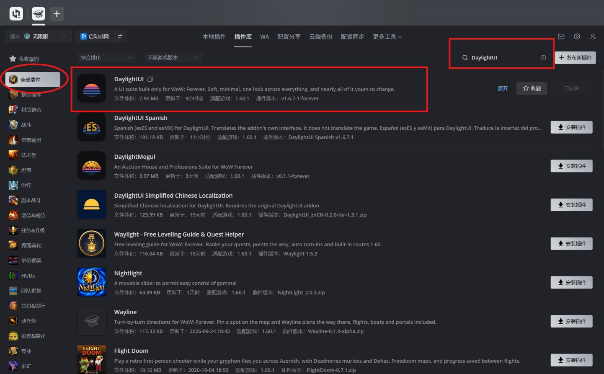
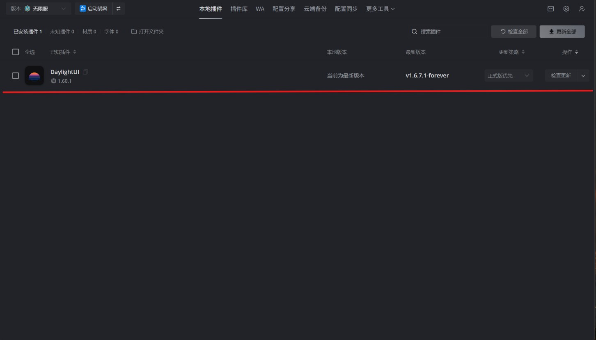
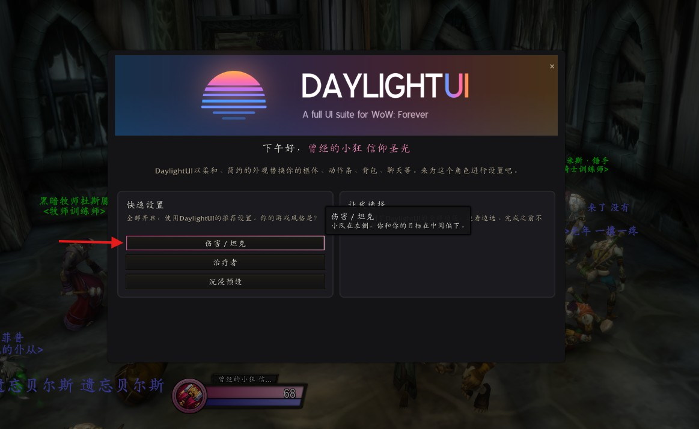
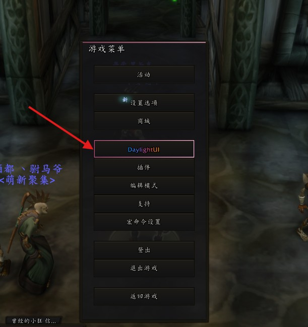
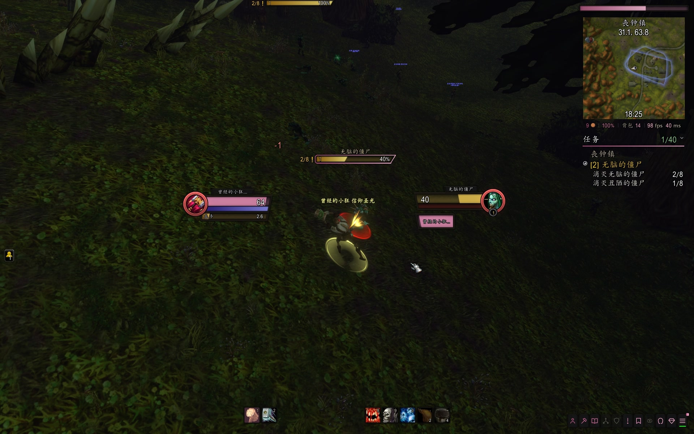
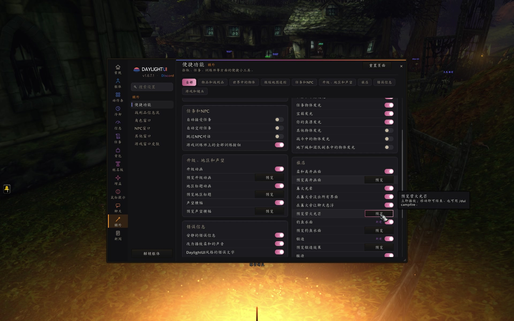
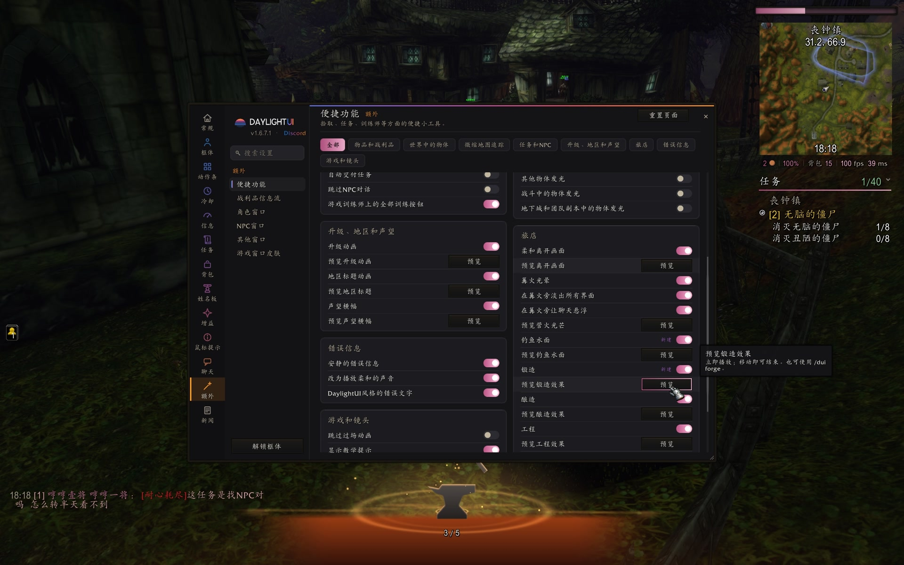
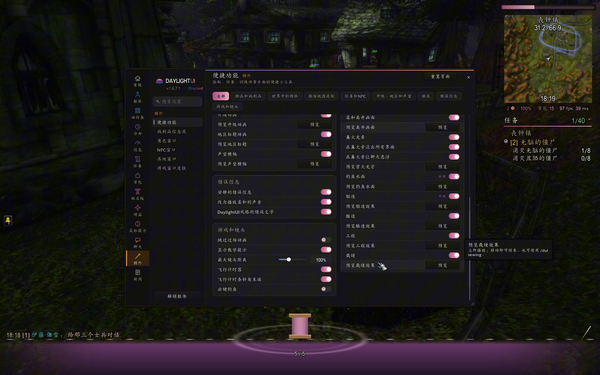

我在无限服发现了一个宝藏级插件，叫 DaylightUI。
它不是只改一个血条、加一块伤害统计的那种小东西，而是一套把框体、动作条、背包、聊天、任务追踪，连带着角色、法术书这些窗口，都换成同一副面孔的完整界面。看起来软，用起来干净。更关键的是，它从第一天就是为《魔兽世界：无限》写的，不是从别的版本硬改过来的。
我现在用的正式包是 v1.6.7.1-forever，适配游戏 1.60.1。进游戏全是简体中文，不用再另装汉化。免费，作者在 CurseForge 上的名字是 Dayliiiiight。插件还在测试阶段，这几个星期更新比较勤。我装上之后在丧钟镇转了转，用着很顺。
国服用黑盒工坊最省事。把版本选成「无限服」，进插件库，左边点「全部插件」，搜索 DaylightUI。

黑盒工坊「插件库」搜索 DaylightUI。请装列表第一条正式包。红框为标注。
列表第一条就是正式包，体积大约 8 MB，适配 1.60.1，版本号 v1.6.7.1-forever。同一页下面还有一条 DaylightUI Simplified Chinese Localization，那是给旧版用的独立汉化补丁，现在不用装。正式包从 1.6.5.2 起就已经内置完整简体中文了，再装那个补丁没有好处。
只装第一条正式包，不要装那条独立汉化。
装完到「本地插件」里看一眼，应该显示「当前为最新版本」。

「本地插件」里可以看到已装上的 DaylightUI，版本 v1.6.7.1-forever，提示当前为最新版本。红框为标注。
然后请完全退出，再重新进游戏。只在游戏里打 /reload，新插件有时候扫不进去。
第一次进游戏会弹出设置向导。它会用你的角色名跟你打招呼，然后让你按职责选一个大概的界面：
伤害 / 坦克：小队在左侧，你和你的目标在中间偏下。
治疗者：小队和团队用方形格子排在你下方，驱散会比较显眼。
沉浸预设：适合在外面做任务。战斗结束后，动作条和框体会淡出去，进了地下城再全部显示。

第一次打开会进入设置向导，可按职责选择伤害 / 坦克、治疗者或沉浸预设。红框为标注。
我选的是伤害 / 坦克。这只是起点，后面随时能改，也可以再跑一遍向导。
打开设置有两种办法。一种是在聊天栏输入 /dui。另一种更省事：按 Esc，游戏菜单里直接有一项 DaylightUI。

按 Esc 打开游戏菜单，里面可以直接点进 DaylightUI。红框为标注。
设置首页左边是分区：框体、动作条、冷却、信息、任务、背包、姓名板、增益、聊天，该有的都有。我这次 20 个模块全开着。右上可以预览框体、解锁后拖动位置，也可以重新打开向导。几乎每一处都能改，但默认就已经能玩，不必一上来就把所有开关拧一遍。
设置首页。左侧是各分区，当前 20 个模块全部启用。
我只稍微调了一下，在丧钟镇看过去就是这样：自己和目标在中间偏下，右上是微缩地图和任务追踪，底部是一排干净的动作条。世界还是那个世界，只是边上那些框不再那么抢眼。

简单设置之后，在丧钟镇的界面。
真动手的时候，这套界面该亮的地方会亮。自己的血条、目标的血条，还有头顶的姓名板，都一眼能读。我给无脑的僵尸上了暗言术：痛，减益就贴在目标框下面；姓名板左边还会标着任务进度，比如 2/8，不用再把眼睛挪到右上角。伤害数字会从中间跳出来，左下角的聊天则把掉落慢慢托出来：链甲短裤、进了外观收藏、再加几枚铜币，不用一堆系统红字在屏幕上砸。

丧钟镇的一场小战斗：框体、姓名板和跳出来的伤害数字。完整过程见文中视频。
这插件让我觉得它是「宝藏」的，不只是框体好看。在设置左侧进「额外」，打开「便捷功能」，里面藏着不少小心思：任务物品发光、自动交接任务、升级和地区标题的动画，还有旅店、篝火、专业技能相关的效果。每一项旁边都有一个「预览」。
我顺着点了几个。点「预览营火光芒」，屏幕底下就会漫上来一层暖暖的火光，提示说立即播放，移动一下就结束，也可以用 /dui campfire。再点锻造，脚边会弹出一只铁砧；工程是一对齿轮；裁缝是一个线轴。每一种还带着不同颜色的光，屏幕下沿也会跟着换色。先看效果，再决定开不开，这种做法很贴心。

点「预览营火光芒」之后，屏幕底下会漫上来一层暖光。也可以用 /dui campfire，移动一下就结束。

预览锻造效果：脚边弹出一只铁砧，周围是一圈暖光。

预览裁缝效果：脚边是一个线轴，光也换成了偏紫的颜色。也可以用 /dui sewing。
这些当然都是小点缀。可一套界面能把打仗的信息做干净，又能在篝火和专业技能上留一点温度，就不是「能用」两个字能概括的了。
日常用得上的，主要是这几个：
/dui 打开设置
/dui install 再走一遍当前角色的向导
/dui unlock 和 /dui lock 移动框体，或把它们锁回去
/dui reset 把框体放回默认位置，不是卸载
/dui test 用样例单位预览，不必真去找一个目标
/dui export 和 /dui import 用来分享配置
想看全部命令，在游戏里输入 /dui all。
装法和设置如果还想看更细的步骤，可以去无限核这篇教程：
https://4evrcore.cn/wp/daylightui/
插件官网是 https://daylightui.com/ ，CurseForge 项目页是 https://www.curseforge.com/wow/addons/daylightui 。黑盒工坊的桌面端在 https://workshop.xiaoheihe.cn/ 。
我自己会继续用着。你要是也在无限服里嫌默认界面太旧，又不想东拼西凑一堆插件，可以先把 DaylightUI 装上试试。大多数时候，默认那一套就已经很好看了。
来源清单：
https://4evrcore.cn/wp/daylightui/
https://daylightui.com/
https://www.curseforge.com/wow/addons/daylightui
https://addons.wago.io/addons/daylightui
https://workshop.xiaoheihe.cn/